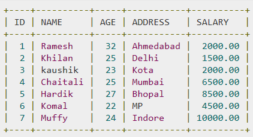
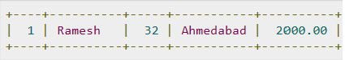

SQL Overview
- SQL is a database computer language designed for the retrieval and management of data in a relational database
- SQL stands for Structured Query Language
- SQL was designed to work on structured data
- SQL is a domain-specific language
- SQL is also for relational data stream management system
- SQL can also be pronounced as sequel
- SQL is useful when handling structured data where there are relations between different entities/variables of the data
- SQL introduced the concept of accessing many records with one single command
- SQL eliminates the need to specify how to reach a record with or without an index
- SQL has become a requirement for most data science jobs that include: data analyst, BI Development, Programmer and Database programmer
- SQL can be used with all application languages like PHP and Java
- You can create own data visualisations by integrating SQL in their application
- Data can be retrieved from a database and converted into XML and JSON formats
- SQL can be used in web services or APIs
- SQL Includes database creation, deletion, fetching rows, modifying rows etc
- SQL is popular as it offers the following advantages
-
Allow users to access data in relational database management systems
- Allow users to describe data
- Allow users to define the data in a database and manipulate that data
- Allows to embed within other languages using SQL modules, libraries & pre-compilers
- Allows users to create and drop databases and tables
- Allows users to create view, stored procedures, functions in a database
- Allow users to set permissions on tables, procedures and views
- Many DBMS vendors have extended their support for SQL by adding statements or instructions to the language, which provide additional functionality
- SQL is governed by the ANSI standards committee
Database Overview
- You use databases all the time
- When you use the Internet search site
- When you log into a network you are validating your name and password against a database
- Even when you use an ATM card at a cash machine you are using database for PIN number verification and balance checking
- A database is a collection of data stored in some organised fashion
- Database software is actually called the Database Management System (DBMS)
- A database is a container created and manipulated via the DBMS
RDBMS
- RDBMS stands for Relational Database Management System
- RDBMS is the basis for SQL and for all modern database systems like MS SQL Server, IBM DB2, Oracle, MySQL and Microsoft Access
Tables
- The data is an RDBMS is stored in database objects which as called as tables
- A table is a structured file that can store data of a specific type
- A table is one type of data or one list
- Every table in a database has a name that identifies it. That name must be always unique
- What makes a table name unique is a combination of the database name and table name
- You cannot use the same table name twice in the same database
- You can reuse table names in different databases
- Tables have characteristics and properties that define how data is stored in them, information includes
-
What data is to be stored
- How the table is broke up
- How individual pieces of information are named
- Schema is Information about a database, the table layout and its properties
- Schema's are used to describe specific tables within a database, as well as entire database and relationships between tables
- The Table is a collection of related data entries and its consists of numerous columns and rows
- A table is the most common and simplest form of data storage in a relational database.

Fields
-
Every table is broken up into smaller entities called fields
- A field is a column in a table that is designed to maintain specific information in every record in the table
Record or a Row
- A record is also called a row of data
- A record is each individual entry that exists in a table
- A record is a horizontal entity in a table
- Data in a table is stored in rows
- Each record is stored in its own row

Columns
- A column is a vertical entity in a table that contains all information associated with a specific field in a table
- Tables are made up of one or more columns
- Column is a single field in a table
- It is extremely important to break data into multiple columns correctly. By doing this makes it possible to sort and filter data
- Each column in the database has an associated datatype, which defines what type of data the column can contain
Primary Keys
- Every row in a table should have some column that uniquely identifies it, this is called a primary key
- A primary key is used to refer to a specific row
- Without a primary key, updating or deleting specific rows in a table becomes extremely difficult
- Every row must have a primary key value
- No two rows can have the same primary key value
- Values in primary key columns should never be modified or updated
- Primary keys should never be reused; i.e. if a row is deleted from a table
NULL Value
- A NULL value in a table is a value in a field that appears to be blank
- A NULL value means no value